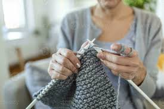
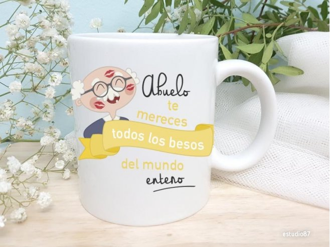
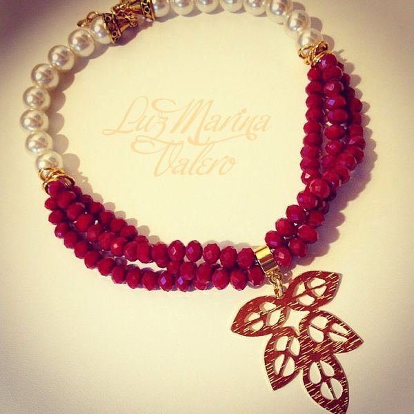

Cada producto es único, creado con el talento, la experiencia y el cariño de nuestros abuelos artesanos.
Bufanda cálida y suave, elaborada con técnicas tradicionales.
Hecha por: Rosa Muñoz (72 años)
Vaso único pintado a mano, perfecto para tu café o té.
Hecho por: Pedro Salinas (78 años)
Collar colorido con cuerdas artesanales, ideal para regalar.
Hecho por: Carmen Vega (75 años)
Rosa es una apasionada del tejido desde niña. Tras jubilarse, comenzó a crear bufandas para regalar a su familia. Hoy vende sus productos para mantenerse activa y compartir su talento con el mundo.
Pedro descubrió la cerámica a los 60 años como forma de terapia. Desde entonces, ha perfeccionado su técnica y encuentra en cada vaso una manera de expresar su creatividad.
Carmen siempre ha disfrutado creando joyas con sus manos. Después de enviudar, decidió emprender con sus collares para mantenerse motivada y autosuficiente.
"Gracias a Abuelarte vendí mis tejidos y ahora tengo mi platita para mis gustos."
"Compré una taza hermosa y supe que fue hecha con mucho amor."
"Mi hija me regaló una bufanda de Abuelarte, y ahora quiero una igual para mí."
"Regalé un cuaderno artesanal a mi novia y le encantó. Se nota el cariño con que fue hecho."
"Me gustó poder apoyar a abuelitos comprando arte hecho por ellos. ¡Hermosa iniciativa!"